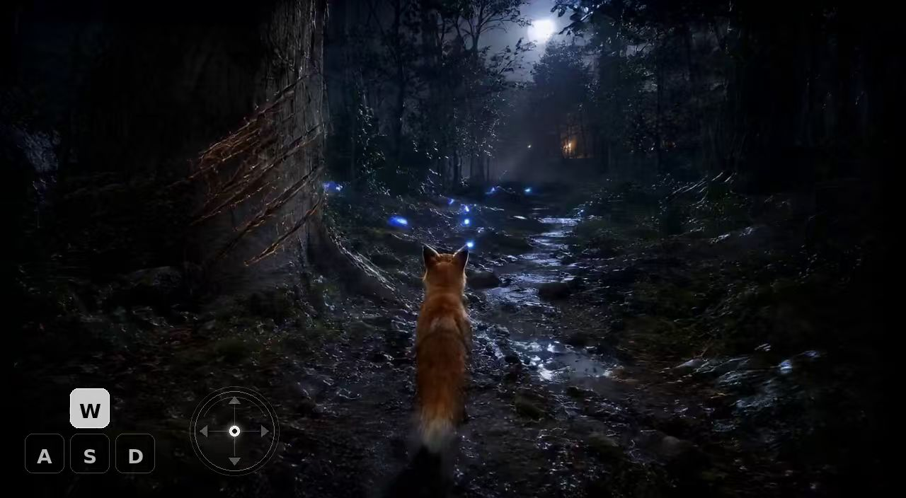

1 School of Computer Science and Technology, Harbin Institute of Technology
2 School of Artificial Intelligence, Northwestern Polytechnical University
3 ETH Zurich 4 Department of Automation, Tsinghua University
Prompt → reference image → generated video.
A first-person view from a strictly stationary observation point on a narrow forest path at night. Towering trunks and dense undergrowth form a dark natural corridor, with the trail bending deeper into mist toward a faint warm light hidden among distant branches. A young red fox stands ahead on the wet path, facing a chain of glowing blue fireflies that mark the route between trees. The ground is layered with slick mud, wet leaves, mossy stones, shallow puddles, and exposed roots, while a nearby massive trunk bears fresh claw marks cut into rough bark. Cool moonlight filters through the canopy, creating silver reflections and a mysterious but inviting atmosphere. The observer's perspective remains fixed, with no dynamic camera movement and no actions taken by the person recording. Autonomous motion continues: fireflies drift and pulse, fog curls through the trees, leaves tremble, puddles ripple, and the fox's ears and tail shift subtly.

Independent video sample.
We present a text-to-4D world generation framework that converts natural language descriptions into dynamic, temporally coherent world scenes. Unlike conventional text-to-image or text-to-video systems, the target representation is not a single view or a short flat video, but an evolving 4D world that jointly models appearance, geometry, motion, and time.
Given a prompt, the system aims to synthesize a scene whose objects and environment remain structurally consistent while undergoing plausible temporal changes. This setting is especially useful for immersive content creation, simulation, embodied AI, and interactive world prototyping, where spatial consistency and dynamic behavior are both required.
This website provides a compact project-page style preview of the idea. The top video is used as the current visual showcase, and the remaining result sections can be filled later with generated 4D worlds, comparisons, ablations, and interactive demonstrations.
This section will present text-conditioned dynamic world samples. Each placeholder can later be replaced by a generated scene video, multi-view rendering, or temporal trajectory visualization.
Text-generated 4D worlds can support several downstream use cases where both scene structure and temporal evolution matter.
If you find this project useful, please consider citing:
@misc{wang2026text2world4d,
title={Text2World-4D: Text-Guided Dynamic World Generation},
author={Di, Yan and Wang, Yaoxing and Zhang, Chenyangguang and Wang, Fei},
year={2026}
}